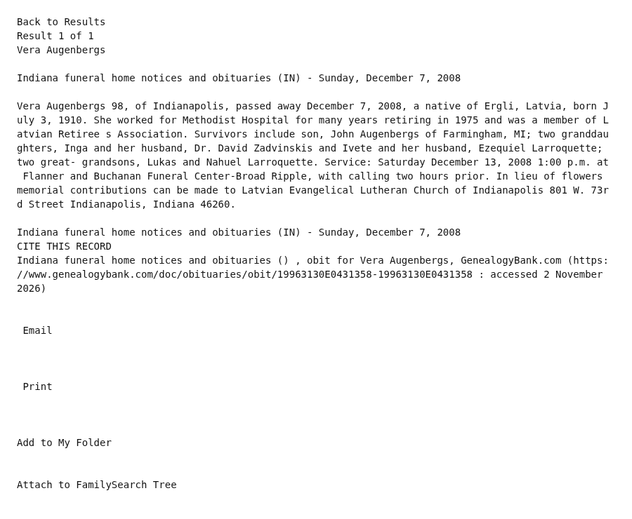

Uģis Augenbergs 1938–2019
Partner of Peter's first cousin once removed Ilze Balka.
Also recorded as Janis Ugis Augenbergs.
Uģis Augenbergs was born on 20 Sep 1938 (according to an online family tree)2. He died on 23 Feb 2019 in Farmington Hills, Michigan, United States (according to an online family tree)6.
Family
- Partner
- Ilze Balka b. 1945
- Children
- Ivete Augenberga b. 1973 documented
- Inga Augenberga b. 1971 documented
Life events
| Event | Date | Place and details |
|---|---|---|
| Born | 20 Sep 1938 | According to an online family tree2 |
| Lived | bet 1 Sep 1973 and 1 Oct 1992 | Beverly Hills, Michigan, United States4 |
| Lived | bet 1984 and 25 Mar 2008 | Farmington, Michigan, United States5 |
| Note | 7 Dec 2008 | United States Death of his mother Vera Augenbergs, age 98, of Indianapolis, Indiana, who died Sunday, 7 December 2008; born 3 July 1910 in Ērgļi, Latvia, worked for Methodist Hospital in Indianapolis for many years retiring in 1975, and was a member of the Latvian Retirees Association and the Latvian…7 |
| Died | 23 Feb 2019 | Farmington Hills, Michigan, United States According to an online family tree6 |
| Origin | Latvia According to the family's 2015 tree3 |
Records


Sources
- MyHeritage family tree 'Dzimta' of Peter's third cousin (his family site), member GEDCOM export of 26 Oct 2026, I146 (person-6000146), GEDCOM lines 4348–4381.
NAME Janis Ugis /Augenbergs/
- MyHeritage family tree 'Dzimta' of Peter's third cousin (his family site), member GEDCOM export of 26 Oct 2026, I146 (person-6000146), GEDCOM lines 4348–4381.
BIRT · 20 SEP 1938
His record match: ASV Publisko Ierakstu Indekss, https://www.myheritage.lv/research/collection-10220/asv-publisko-ierakstu-indekss?itemId=134427682&action=showRecord: 'Janis Ugis Augenbergs | Dzimšana: 1. Sep 1938 | Pazīstams arī kā: Augenbergs U John'. His record match: Index of Obituaries, https://www.myheritage.lv/research/collection-10822/index-of-obituaries?itemId=17465099&action=showRecord: 'Janis Augenbergs | Dzimšana: 1938.gada 20. Sep | Miršana: 2019.gada 23. Feb - Farmington Hills, Michigan | Vecums: 80 | Obituary text: We | are sad to announce that on February 23, 2019 we had to say goodbye to Janis Augenbergs (Farmington Hills, Michigan).'.
- Peter's tree, danenberg.sql, 2007–2015, personae 21, provenance.
- Janis Ugis Augenbergs — [address omitted], Beverly Hills, MI 48025-2720.
Janis Ugis Augenbergs … [address omitted], Beverly HillsMichigan 48025-2720, USA … Ilze Augenbergs … Dzīves vietas: Dzīves vietaDatums[address omitted], Beverly HillsMichigan 48025-2720, USA1. Sep 1973
Resided at [address omitted], Beverly Hills, Oakland County, Michigan 48025-2720 with his wife Ilze Balka and their daughters Inga (born 1971) and Ivete (born 1973), recorded there in the US Public Records Index on both his and Ilze's entries (with dates 1 Sep 1973 and 1 Oct 1992 on Ilze's entry).
- Janis Ugis Augenbergs — 31831 Grand River Ave, Unit 28, Farmington, MI 48336.
31831 Grand River Ave, FarmingtonMichigan 48336-4137, USA1. Jūl 2004Rādīt kaimiņus31831 Grand River Ave, Unit 28, FarmingtonMichigan 48336-4142, USA2. Nov 2004
Recorded in the US Public Records Index as residing in Farmington, Oakland County, Michigan, with entries in Unit 28 at 31831 Grand River Ave on 1 July 2004 and 2 November 2004 and a Farmington/Farmington Hills telephone number (476-8107) from 1 January 1984 to 25 March 2008.
- MyHeritage family tree 'Dzimta' of Peter's third cousin (his family site), member GEDCOM export of 26 Oct 2026, I146 (person-6000146), GEDCOM lines 4348–4381.
DEAT · 23 FEB 2019 · Farmington Hills, Michigan · AGE 80
His record match: Index of Obituaries, https://www.myheritage.lv/research/collection-10822/index-of-obituaries?itemId=17465099&action=showRecord: 'Janis Augenbergs | Dzimšana: 1938.gada 20. Sep | Miršana: 2019.gada 23. Feb - Farmington Hills, Michigan | Vecums: 80 | Obituary text: We | are sad to announce that on February 23, 2019 we had to say goodbye to Janis Augenbergs (Farmington Hills, Michigan).'.
- Obituary: Vera Augenbergs, Indiana funeral home notices and obituaries (Indianapolis, Indiana), 7 December 2008.
Vera Augenbergs 98, of Indianapolis, passed away December 7, 2008, a native of Ergli, Latvia, born July 3, 1910. She worked for Methodist Hospital for many years retiring in 1975 and was a member of Latvian Retiree s Association. Survivors include son, John Augenbergs of Farmingham, MI; two granddaughters, Inga and her husband, Dr. David Zadvinskis and Ivete and her husband, Ezequiel Larroquette; two great- grandsons, Lukas and Nahuel Larroquette. Service: Saturday December 13, 2008 1:00 p.m. at Flanner and Buchanan Funeral Center-Broad Ripple, with calling two hours prior. In lieu of flowers memorial contributions can be made to Latvian Evangelical Lutheran Church of Indianapolis 801 W. 73rd Street Indianapolis, Indiana 46260.
Death of his mother Vera Augenbergs, age 98, of Indianapolis, Indiana, who died Sunday, 7 December 2008; born 3 July 1910 in Ērgļi, Latvia, worked for Methodist Hospital in Indianapolis for many years retiring in 1975, and was a member of the Latvian Retirees Association and the Latvian Evangelical Lutheran Church of Indianapolis (801 W. 73rd St.); survived by son John [Jānis Uģis] Augenbergs of Farmington, Michigan, granddaughters Inga (and husband Dr. David Zadvinskis) and Ivete (and husband Ezequiel Larroquette), and great-grandsons Lukas and Nahuel Larroquette; funeral Saturday, 13 December 2008 at Flanner and Buchanan Funeral Center – Broad Ripple, Indianapolis.